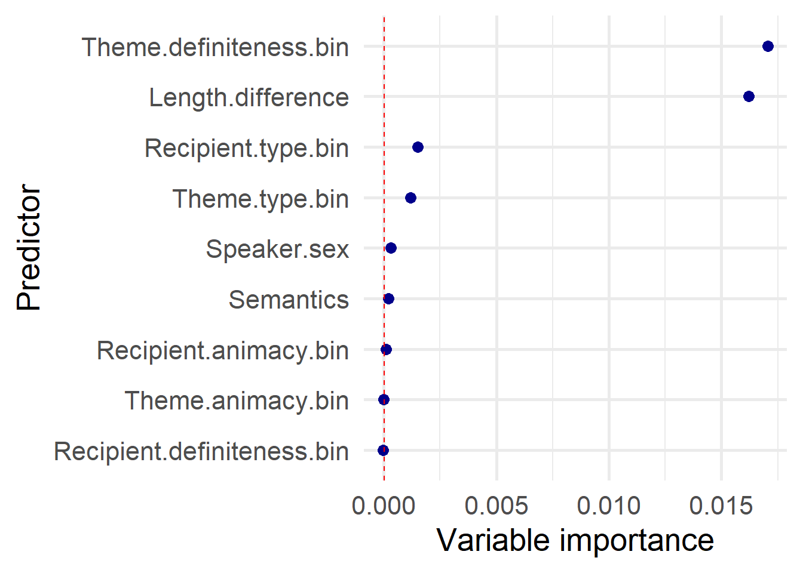

library(tidyverse) # Easily Load the 'Tidyverse'
library(here) # Enable easy file referencing in project-oriented workflows
library(lme4) # for mixed-effects regression
library(Hmisc) # to calculate C values
library(car) # to calculate VIFs
library(MuMIn) # Multi-Model Inference for PSeudo R2 measures
library(effects) # for partial effects plot
library(party) # for ctrees and CRF
library(kableExtra) # Construct Complex Table with 'kable' and Pipe SyntaxPredicting the dative alternation in English
A case study with logistic regression
Here is presented a step-by-step variation study on the English dative alternation based on Szmrecsanyi et al. (2017), using two traditional statistical techniques in variationist analysis: binomial logistic regression analysis and conditional random forest.
For the theoretical explanation of the dataset and the techniques, please check the slides.
Setup
The analysis needs the activation of different packages, lme4 and party for regression modeling with random effects and conditional random forest respectively. Hmisc, car and MuMIn are pivotal for calculating evaluation measures for regression modeling, while the library effects allows the plot of partial effects plot.
Make sure to have them installed on your R studio version before running the script!
Upload and filter the dataset
The dataset I will provide has already been manipulated: it represents only the American subsection of the original dataset (1190 observations), plus it contains recipient/theme.lemma.
dat_us <- read_tsv(here::here('MCL_seminar', 'data', 'dat_us.tsv'), show_col_types = F)
head(dat_us)# A tibble: 6 × 42
Token…¹ Variety Corpus Speaker Speak…² Speak…³ Context Inclu…⁴ Inclu…⁵ Seman…⁶
<chr> <chr> <chr> <dbl> <chr> <dbl> <chr> <chr> <lgl> <chr>
1 dat-26… US SWBD 1002 F 1963 A: Rig… y NA T
2 dat-26… US SWBD 1016 F 1945 being … y NA T
3 dat-26… US SWBD 1026 F 1957 of tha… y NA A
4 dat-26… US SWBD 1031 F 1940 but it… y NA A
5 dat-26… US SWBD 1033 F 1965 B: Yea… y NA T
6 dat-26… US SWBD 1050 M 1950 B: -- … y NA A
# … with 32 more variables: Response.variable <chr>, Verb.form <chr>,
# Verb.particle <lgl>, Recipient <chr>, Recipient.head <chr>,
# Recipient.type <chr>, Recipient.animacy <chr>,
# Recipient.definiteness <chr>, Recipient.length <dbl>,
# Recipient.coordinated <dbl>, Recipient.quantified.pronoun <dbl>,
# Recipient.contains.contraction <dbl>, Recipient.contains.acronym <dbl>,
# Recipient.contains.multiword.number <dbl>, …After uploading the dataset, the second step is to filter and model the dataset based on our research needs. Specifically, here I first select only the predictors we are interested into and filter out the observations with any NA values in the predictors and the ones that do not contain the value F or M in the Speaker.sex predictor. Then, I proceed to create the binary predictors as described in the paper, and the new Length.difference variable by calculating the difference between the log values of Theme/Recipient.length. I also did here some level adjustment for the regression analysis: I set the reference level for the Response.variable as Prepositional, thus the predicted odds will be for the Ditransitive variant. Speaker.pruned and Theme/Recipient.lemma.pruned are pruned variables to be used in the regression model as random effects (I will get into details in the regression section): fct_lump_min creates a new level called other for lemmas that appear fewer than 2 times. Eventually, the character variables should be mutated in factors.
Factors are used to represent categorical data in R.
Factors are stored as integers, and have labels associated with these unique integers (levels). While factors look (and often behave) like character vectors, they are actually integers under the hood, and you need to be careful when treating them like strings.
Once created them using the factor() command, factors can only contain a pre-defined set values, known as levels. By default, R always sorts levels in alphabetical order.
dat_us <- dat_us %>%
select(Token.ID, Variety, Speaker, Speaker.sex, Response.variable,
Recipient.type, Theme.type,
Recipient.definiteness, Theme.definiteness,
Recipient.animacy, Theme.animacy,
Recipient.length, Theme.length,
Semantics,
Recipient.head, Theme.head, Recipient.lemma, Theme.lemma) %>%
na.omit() %>%
filter(Speaker.sex %in% c('F', 'M')) %>%
mutate(
Recipient.type.bin = if_else(Recipient.type == 'N', 'N', 'P'),
Theme.type.bin = if_else(Theme.type == 'N', 'N', 'P'),
Recipient.definiteness.bin = if_else(Recipient.definiteness == 'Indefinite', 'Indefinite', 'Definite'),
Theme.definiteness.bin = if_else(Theme.definiteness == 'Indefinite', 'Indefinite', 'Definite'),
Recipient.animacy.bin = if_else(Recipient.animacy == 'A', 'A', 'I'),
Theme.animacy.bin = if_else(Theme.animacy == 'A', 'A', 'I'),
Length.difference = log(Recipient.length) - log(Theme.length)) %>%
mutate(across(where(is.character), as.factor),
Speaker = factor(Speaker),
Response.variable = fct_relevel(Response.variable, "P"), #level the response variable: reference level is P-dative, thus predicted odds are for the D-dative
Speaker.pruned = fct_lump_min(Speaker, 5, other_level = "other"), #pruning the random effects
Theme.lemma.pruned = fct_lump_min(Theme.lemma, 2, other_level = "other"),
Recipient.lemma.pruned = fct_lump_min(Recipient.lemma, 2, other_level = "other"))
head(dat_us)%>%
kbl(fixed_thead = T) %>%
kable_paper()| Token.ID | Variety | Speaker | Speaker.sex | Response.variable | Recipient.type | Theme.type | Recipient.definiteness | Theme.definiteness | Recipient.animacy | Theme.animacy | Recipient.length | Theme.length | Semantics | Recipient.head | Theme.head | Recipient.lemma | Theme.lemma | Recipient.type.bin | Theme.type.bin | Recipient.definiteness.bin | Theme.definiteness.bin | Recipient.animacy.bin | Theme.animacy.bin | Length.difference | Speaker.pruned | Theme.lemma.pruned | Recipient.lemma.pruned |
|---|---|---|---|---|---|---|---|---|---|---|---|---|---|---|---|---|---|---|---|---|---|---|---|---|---|---|---|
| dat-2626 | US | 1002 | F | D | P | I | Definite | Indefinite | A | I | 1 | 1 | T | us | something | us/pp | something/pn | P | P | Definite | Indefinite | A | I | 0 | 1002 | something/pn | us/pp |
| dat-2627 | US | 1016 | F | D | P | P | Definite | Definite | A | I | 1 | 1 | T | me | hers | me/pp | hers/pp | P | P | Definite | Definite | A | I | 0 | 1016 | other | me/pp |
| dat-2628 | US | 1026 | F | D | P | N | Definite | Indefinite | A | I | 1 | 1 | A | her | options | her/pp | option/nn | P | N | Definite | Indefinite | A | I | 0 | other | option/nn | her/pp |
| dat-2629 | US | 1031 | F | D | P | N | Definite | Indefinite | A | I | 1 | 1 | A | us | demos | us/pp | demos/nn | P | N | Definite | Indefinite | A | I | 0 | other | other | us/pp |
| dat-2630 | US | 1033 | F | D | P | I | Definite | Indefinite | A | I | 1 | 1 | T | us | one | us/pp | one/pn | P | P | Definite | Indefinite | A | I | 0 | 1033 | one/pn | us/pp |
| dat-2631 | US | 1050 | M | D | P | N | Definite | Indefinite | A | I | 1 | 1 | A | me | shelter | me/pp | shelter/nn | P | N | Definite | Indefinite | A | I | 0 | other | shelter/nn | me/pp |
The bird’s eye perspective: conditional random forest
Conditional random forest (CRF) is a multivariate statistical method that can answer to the research question: which linguistic factors help to predict the use of particular linguistic variants? For an accessible introduction to conditional inference trees and random forest, check out Levshina (2020).
CRF can be done using a great range of libraries (partykit, ranger among them): here I use party, the classic library for trees and forests in R.
Since it is a partitioning algorithm with random sampling, we need to set first a seed to get always the same result. forest represents the implementation of the formula for the CRF using the cforest() function: similarly to the formula for regression models, the syntax is: cforest(response variable ~ [variables], data = data_name) .
After computing the CRF, varimp() computes variable importance measures: if conditional = TRUE, the importance of each variable is computed by adjusting for correlations between predictor variables.
The third chunk of the code is dedicated to the computation of the Concordance index C-value, better known as simply C-value, a non-parametric measure of how well a statistical model fits a set of observations. {Hmsic} is the reference library, using the function somers2().
Important
C-value is a pivotal measure for most part of the statistical tools employed in variationist analysis, especially for regression modeling. However, make sure to not rely only on this measure for your assessments as it gives a general evaluation of the model. For CRF is fine, but we will see that it is not the case for regression modeling.
Finally, it is possible to plot the result of the varimp computation and check for the most important variables in the prediction of the linguistic variants. The red dotted line represents the threshold to consider a variable slightly significant. For a detailed theoretical explanation, see Tagliamonte & Baayen (2012).
set.seed(123)
forest = cforest(Response.variable ~
Speaker.sex +
Semantics +
Recipient.type.bin +
Theme.type.bin +
Recipient.definiteness.bin +
Theme.definiteness.bin+
Recipient.animacy.bin+
Theme.animacy.bin+
Length.difference,
data = dat_us)
#### variable importance ranking, takes some time
forest.varimp = varimp(forest, conditional = TRUE)
#### model C index
#### C ranges between 0 an 1; the closer to 1, the better the model
prob2.rf <- unlist(treeresponse(forest))[c(FALSE, TRUE)]
somerssmallcrf <- somers2(prob2.rf, as.numeric(dat_us$Response.variable) - 1)
somerssmallcrf["C"] C
0.986687 ### the following code creates a dot plot visualizing the variable importance ranking
ggplot(enframe(forest.varimp, name="Predictor", value = "Varimp"),
aes(x = Varimp, y = reorder(Predictor, Varimp))) +
geom_point(size = 3, color = "darkblue") +
labs(x = "Variable importance", y = "Predictor") +
geom_vline(xintercept = abs(min(forest.varimp)),
color = "red", linetype = 2) +
theme_minimal(base_size = 20) +
theme(legend.position = c(0.9, 0.2))
The jeweler’s eye perspective: regression modeling
To take a closer look at the predictors, and their direction in predicting one of the two linguistic variants, we use binary logistic regression analysis with mixed effects as implemented in the lme4 package in R.
Regression modeling has in general a very simple and standardize code, but it can be done in many different ways, using different techniques to get to the final results. Here I will show you the simplest bottom-up technique to get from a maximal model with all the predictors to a minimal model comprising of only the most meaningful predictors. The idea is to manually remove the predictor with the highest p-value at each run of the regression model, till we get a model with few meaningful predictors.
Note
There are many ways to implement automatic algorithms to get minimal models by using stepwise modeling. However, I would recommend to use those automatic techniques when you feel to master an advance knowledge of your data and of regression modeling.
Maximal regression model
The reference level is Prepositional, thus the predicted odds are for the Ditransitive alternation.
glmer() is the function to use for regression models with mixed-effects. See the documentation for the formula and an in-depth explanation of the code.
Tip
Here the monthly-updated GLMM bible for the thousands of problems in fitting the regression model.
trad_model <- glmer(Response.variable ~
Speaker.sex +
Semantics +
Recipient.type.bin +
Theme.type.bin +
Recipient.definiteness.bin +
Theme.definiteness.bin+
Recipient.animacy.bin+
Theme.animacy.bin+
Length.difference+
(1|Speaker)+ # random effect (intercept adjustment)
(1|Recipient.lemma)+
(1|Theme.lemma),
data = dat_us,
family=binomial
)Warning in (function (fn, par, lower = rep.int(-Inf, n), upper = rep.int(Inf, :
failure to converge in 10000 evaluationsWarning in optwrap(optimizer, devfun, start, rho$lower, control = control, :
convergence code 4 from Nelder_Mead: failure to converge in 10000 evaluationsWarning in checkConv(attr(opt, "derivs"), opt$par, ctrl = control$checkConv, :
unable to evaluate scaled gradientWarning in checkConv(attr(opt, "derivs"), opt$par, ctrl = control$checkConv, :
Model failed to converge: degenerate Hessian with 1 negative eigenvaluessummary(trad_model)Generalized linear mixed model fit by maximum likelihood (Laplace
Approximation) [glmerMod]
Family: binomial ( logit )
Formula: Response.variable ~ Speaker.sex + Semantics + Recipient.type.bin +
Theme.type.bin + Recipient.definiteness.bin + Theme.definiteness.bin +
Recipient.animacy.bin + Theme.animacy.bin + Length.difference +
(1 | Speaker) + (1 | Recipient.lemma) + (1 | Theme.lemma)
Data: dat_us
AIC BIC logLik deviance df.resid
279.6 350.5 -125.8 251.6 1156
Scaled residuals:
Min 1Q Median 3Q Max
-6.8673 0.0036 0.0122 0.0383 3.4311
Random effects:
Groups Name Variance Std.Dev.
Theme.lemma (Intercept) 8.9752300 2.99587
Speaker (Intercept) 0.0001514 0.01231
Recipient.lemma (Intercept) 0.2152492 0.46395
Number of obs: 1170, groups:
Theme.lemma, 478; Speaker, 345; Recipient.lemma, 130
Fixed effects:
Estimate Std. Error z value Pr(>|z|)
(Intercept) 0.7024 2.0973 0.335 0.737696
Speaker.sexM -0.2330 0.5548 -0.420 0.674556
SemanticsC -1.2814 1.0826 -1.184 0.236554
SemanticsT -1.4212 0.7170 -1.982 0.047479 *
Recipient.type.binP 2.8195 0.6920 4.074 4.61e-05 ***
Theme.type.binP -1.0570 1.1745 -0.900 0.368147
Recipient.definiteness.binIndefinite -2.4946 1.0636 -2.345 0.019006 *
Theme.definiteness.binIndefinite 3.1257 0.9373 3.335 0.000853 ***
Recipient.animacy.binI -3.4990 1.0314 -3.392 0.000693 ***
Theme.animacy.binI 0.4650 2.0049 0.232 0.816591
Length.difference -2.6538 0.6783 -3.912 9.14e-05 ***
---
Signif. codes: 0 '***' 0.001 '**' 0.01 '*' 0.05 '.' 0.1 ' ' 1
Correlation of Fixed Effects:
(Intr) Spkr.M SmntcC SmntcT Rcp..P Thm..P Rcpnt.d.I Thm.d.I
Speaker.sxM -0.186
SemanticsC -0.099 0.045
SemanticsT -0.268 0.204 0.298
Rcpnt.typ.P -0.122 0.116 -0.135 -0.188
Thm.typ.bnP -0.146 0.155 0.084 -0.030 -0.004
Rcpnt.dfn.I -0.103 0.142 0.122 0.217 0.062 0.100
Thm.dfntn.I -0.104 0.044 -0.032 -0.224 0.261 0.066 -0.503
Rcpnt.nmc.I -0.060 0.044 0.119 0.316 -0.191 0.051 0.552 -0.662
Thm.nmcy.bI -0.877 -0.070 -0.018 0.089 0.015 0.006 -0.130 0.087
Lngth.dffrn -0.018 0.035 0.094 0.243 0.027 -0.130 0.530 -0.665
Rcpnt.n.I Thm.n.I
Speaker.sxM
SemanticsC
SemanticsT
Rcpnt.typ.P
Thm.typ.bnP
Rcpnt.dfn.I
Thm.dfntn.I
Rcpnt.nmc.I
Thm.nmcy.bI -0.149
Lngth.dffrn 0.640 -0.083
optimizer (Nelder_Mead) convergence code: 4 (failure to converge in 10000 evaluations)
unable to evaluate scaled gradient
Model failed to converge: degenerate Hessian with 1 negative eigenvalues
failure to converge in 10000 evaluationsModel summaries: Pseudo R2 measures (coefficient of determination), C value, and ViF
In order to evaluate the performance of the model, it is possible to compute different measures:
C-value (see section on CRF)
Pseudo-R squared: a goodness of fit measure explaining the improvement in model likelihood over a null model (see for discussion: Hemmert et al. (2018)). Here I compute the marginal pseudo-R2 (the variance explained by fixed factors) and the conditional pseudo-R2 (variance explained by both fixed and random factors (i.e. the entire model)).
Variance Inflation Factors: A variance inflation factor (VIF) detects multicollinearity in regression analysis. Multicollinearity is when there is correlation between predictors (i.e. independent variables) in a model; the presence of multicollinearity can adversely affect your regression results. The VIF estimates how much the variance of a regression coefficient is inflated due to multicollinearity in the model. A goof VIF should be lower than 2.5, but there is a lot of debate.
# R2
r.squaredGLMM(trad_model)Warning: 'r.squaredGLMM' now calculates a revised statistic. See the help page.Warning: the null model is correct only if all variables used by the original
model remain unchanged.boundary (singular) fit: see help('isSingular') R2m R2c
theoretical 5.989478e-01 8.942824e-01
delta 4.138664e-15 6.179394e-15# Concordance index C
somers2(binomial()$linkinv(fitted(trad_model)), as.numeric(dat_us$Response.variable) -1) C Dxy n Missing
0.9967788 0.9935576 1170.0000000 0.0000000 # Variance Inflation Factors
vif(trad_model) GVIF Df GVIF^(1/(2*Df))
Speaker.sex 1.131815 1 1.063868
Semantics 1.298577 2 1.067498
Recipient.type.bin 1.313491 1 1.146076
Theme.type.bin 1.118899 1 1.057780
Recipient.definiteness.bin 1.743511 1 1.320421
Theme.definiteness.bin 2.526215 1 1.589407
Recipient.animacy.bin 2.404110 1 1.550519
Theme.animacy.bin 1.063911 1 1.031460
Length.difference 2.439304 1 1.561827Minimal regression model
After manually removing our not-significant predictors, we should get our minimal adequate regression model.
For the sake of length, I did not show every passage (I will show it in class).
Before starting pruning the model, a good practice is to improve the regression model in two steps:
By pruning the random effects (i.e. consider only the levels higher that a certain threshold);
By optimizing the model, using different techniques: one of the most common is the optimizer
bobyqawhich enhances the performance of the model together withoptCtrl = list(maxfun = 100000)which allows the model to perform more runs.
trad_model_min <- glmer(Response.variable ~
Semantics +
Recipient.type.bin +
Theme.type.bin +
Recipient.definiteness.bin +
Theme.definiteness.bin +
Recipient.animacy.bin+
Length.difference+
(1|Speaker.pruned)+ # random effect (intercept adjustment)
(1|Recipient.lemma.pruned)+
(1|Theme.lemma.pruned),
data = dat_us,
family=binomial,
glmerControl(optimizer = "bobyqa", optCtrl = list(maxfun = 100000))
)
summary(trad_model_min)Generalized linear mixed model fit by maximum likelihood (Laplace
Approximation) [glmerMod]
Family: binomial ( logit )
Formula: Response.variable ~ Semantics + Recipient.type.bin + Theme.type.bin +
Recipient.definiteness.bin + Theme.definiteness.bin + Recipient.animacy.bin +
Length.difference + (1 | Speaker.pruned) + (1 | Recipient.lemma.pruned) +
(1 | Theme.lemma.pruned)
Data: dat_us
Control: glmerControl(optimizer = "bobyqa", optCtrl = list(maxfun = 1e+05))
AIC BIC logLik deviance df.resid
283.9 344.7 -129.9 259.9 1158
Scaled residuals:
Min 1Q Median 3Q Max
-29.3657 0.0115 0.0291 0.0750 3.2863
Random effects:
Groups Name Variance Std.Dev.
Theme.lemma.pruned (Intercept) 4.05088 2.0127
Speaker.pruned (Intercept) 0.47153 0.6867
Recipient.lemma.pruned (Intercept) 0.06079 0.2465
Number of obs: 1170, groups:
Theme.lemma.pruned, 158; Speaker.pruned, 89; Recipient.lemma.pruned, 38
Fixed effects:
Estimate Std. Error z value Pr(>|z|)
(Intercept) 0.1945 0.7095 0.274 0.7840
SemanticsC -1.0726 0.7750 -1.384 0.1664
SemanticsT -1.0996 0.5448 -2.018 0.0436 *
Recipient.type.binP 2.8374 0.6030 4.705 2.54e-06 ***
Theme.type.binP -0.9247 0.8281 -1.117 0.2642
Recipient.definiteness.binIndefinite -1.5220 0.6707 -2.269 0.0233 *
Theme.definiteness.binIndefinite 2.6062 0.5973 4.363 1.28e-05 ***
Recipient.animacy.binI -2.5117 0.5917 -4.245 2.19e-05 ***
Length.difference -1.9668 0.3820 -5.148 2.63e-07 ***
---
Signif. codes: 0 '***' 0.001 '**' 0.01 '*' 0.05 '.' 0.1 ' ' 1
Correlation of Fixed Effects:
(Intr) SmntcC SmntcT Rcp..P Thm..P Rcpnt.d.I Thm..I Rcpnt.n.I
SemanticsC -0.198
SemanticsT -0.217 0.318
Rcpnt.typ.P -0.352 -0.130 -0.105
Thm.typ.bnP -0.204 0.078 -0.091 -0.051
Rcpnt.dfn.I -0.262 0.067 0.135 0.210 0.059
Thm.dfntn.I -0.463 0.039 -0.106 0.201 0.105 -0.277
Rcpnt.nmc.I -0.108 0.078 0.233 -0.134 0.015 0.266 -0.452
Lngth.dffrn 0.192 0.041 0.041 0.146 -0.202 0.245 -0.426 0.315 Model summaries: Pseudo R2 measures (coefficient of determination), C value and VIF
# Pseudo R2 measures
r.squaredGLMM(trad_model_min)Warning: the null model is correct only if all variables used by the original
model remain unchanged. R2m R2c
theoretical 0.5980292 0.8320310
delta 0.2696375 0.3751436# Concordance index C
somers2(binomial()$linkinv(fitted(trad_model_min)), as.numeric(dat_us$Response.variable) -1) C Dxy n Missing
0.9898890 0.9797781 1170.0000000 0.0000000 # Variance Inflation Factors
vif(trad_model_min) GVIF Df GVIF^(1/(2*Df))
Semantics 1.148769 2 1.035281
Recipient.type.bin 1.264991 1 1.124718
Theme.type.bin 1.097579 1 1.047654
Recipient.definiteness.bin 1.263261 1 1.123949
Theme.definiteness.bin 1.613373 1 1.270186
Recipient.animacy.bin 1.399355 1 1.182943
Length.difference 1.420581 1 1.191881Partial effect plots on regression model
The effects package can help us shed a light on the reading of the coefficients in regression models. Here I plotted the partial effects for the predictors of the minimal model. For a detalied explanation, check out here.
References and further readings
Bresnan, J., Cueni, A., Nikitina, T., Baayen, H., 2007. Predicting the Dative Alternation, in: Bouma, G., Kraemer, I., Zwarts, J. (Eds.), Cognitive Foundations of Interpretation. Royal Netherlands Academy of Science, Amsterdam, pp. 69–94.
Hemmert, G. A. J., Schons, L. M., Wieseke, J., & Schimmelpfennig, H. (2018). Log-likelihood-based Pseudo-R2 in Logistic Regression: Deriving Sample-sensitive Benchmarks. Sociological Methods & Research, 47(3), 507–531.
Levshina, N. (2020). Conditional Inference Trees and Random Forests. In: Paquot, M., Gries, S.T. (eds) A Practical Handbook of Corpus Linguistics. Springer, Cham., 611-44.
Szmrecsanyi, B., Grafmiller, J., Bresnan, J., Rosenbach, A., Tagliamonte, S., Todd, S., 2017. Spoken syntax in a comparative perspective: The dative and genitive alternation in varieties of English. Glossa J. Gen. Linguist. 2, 86.
Tagliamonte, S., & Baayen, R. H. (2012). Models, forests and trees of York English: Was/were variation as a case study for statistical practice. Language Variation and Change, 24(2), 135–178.